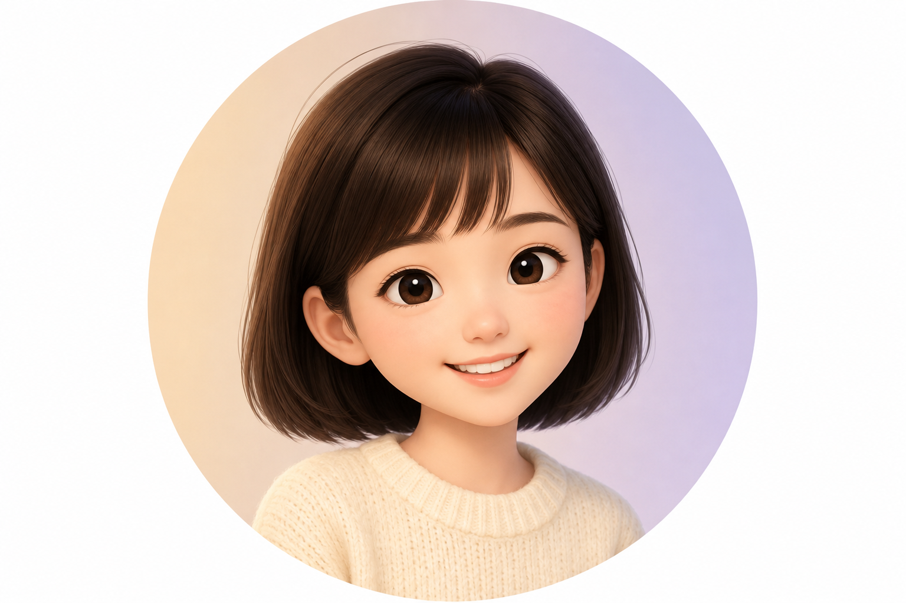
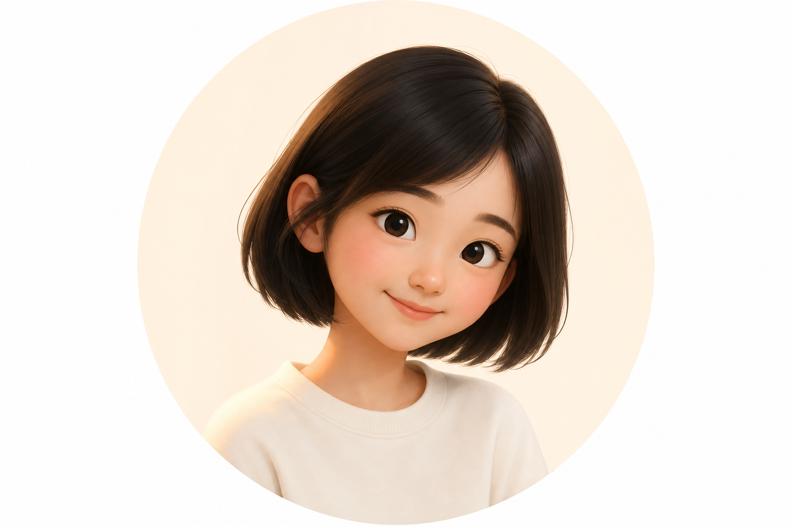
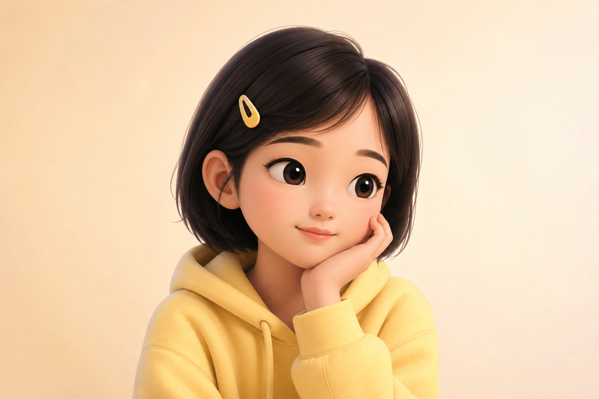

推荐 A · 默认

标准微笑
最接近豆包默认气质：短发、针织、开朗笑。适合 YiYi 主头像与欢迎语。
聊天预览
你好，我是 YiYi。想先听听你的想法。
48px
32px
按豆包思路：短发女生、亲和拟人、无 AI 科技元素（无光环、发光瞳、耳麦、电路）。像一位会听你说话、替你出面沟通的朋友，而不是机器人。

最接近豆包默认气质：短发、针织、开朗笑。适合 YiYi 主头像与欢迎语。

微侧头、浅笑，像在认真听用户说话。适合对话中、推荐问题等待回复时。

发夹 + 卫衣，表情更内敛。适合「正在更新画像」「匹配中」等等待态。
更开朗、头身比略 Q。适合 Tab 入口或偏年轻向，但仍保持豆包式「真人感」。
下一步：
选定主方案（建议 A 作默认，B/C 作状态切换）后，可让插画师按同一角色出正式资产包（512×512 PNG + 32/44 小图），或我按选定方案继续生成「拒绝 / 匹配完成」等表情并接入 YiyiAvatar。
图片位于 docs/mockups/yiyi-avatars/。